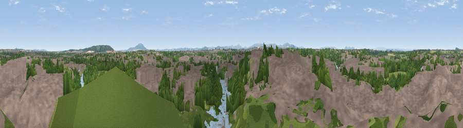

Viewpoint near Shrewsbury
#19747 in England · top 64% of its area beats it · near ShrewsburyWhere it is
The exact computed spot (SJ 49475 12825). Click the marker for map links.
The view, rendered

A 360° render of this exact spot computed from the terrain model, tree cover and land cover — summer colours, afternoon light, calibrated against photographs of famous viewpoints. Real trees, hedges and buildings will differ in detail.
The panorama
Grey silhouette: terrain skyline in each direction (720 bearings, Earth curvature and refraction included). Dashed green: skyline with trees (+15 m) and buildings (+8 m) as obstacles. Blue strip: how far the ground is visible on each bearing.
Where the view opens
Wedge length = distance to the farthest visible ground on that bearing (vegetation-aware). Rings at 10, 25 and 50 km.
What fills the view
52% built-up · 32% woodland · 8% grassland · 6% water · 2% cropland
Angular shares of the visible panorama (visual magnitude), not map area. Landscape diversity 0.50 (0–1 Shannon).
Key numbers
More beautiful places nearby
The staircase of upgrades: each row has a higher view potential than everything closer. Driving times are estimates from straight-line distance, calibrated against real road routing — check an actual route before setting out.
| Place | Direction | Drive | Score |
|---|---|---|---|
| Viewpoint near Bayston Hill | SSE · 3 km | ~7 min | 63.2 |
| Viewpoint near Uffington | ENE · 4 km | ~10 min | 71.0 |
| Pim Hill | N · 8 km | ~17 min | 72.5 |
| Radlith | SW · 10 km | ~20 min | 73.3 |
| Viewpoint near Plealey | SW · 11 km | ~20 min | 78.0 |
| Earl's Hill | SW · 12 km | ~22 min | 82.2 |
| Viewpoint near Little Wenlock | ESE · 14 km | ~25 min | 86.6 |
| North Hill | SSE · 72 km | ~95 min | 86.8 |
52.71072, -2.74930 · source: screening · position refined by local search. Computed location — check access rights before visiting.